Sesión 3 de ejercicios EJB - Beans de sesión sin estado con BEA Workshop
En esta sesión de ejercicios vamos a crear el mismo ejb de sesión que en la clase pasada, pero utilizando el entorno de desarrollo BEA Workshop y el servidor de aplicaciones BEA WebLogic.
WebLogic permite, ya en la versión 2.1, el uso de anotaciones propias en el fichero de implementación del enterprise bean. Estas anotaciones son procesdas por las herramientas de despliegue de WebLogic y el EJB se construye de forma automática a partir de ellas. La especificación EJB 3.0 utiliza una estrategia similar, pero con anotaciones estándar.
Pasar de la forma de trabajar con WebLogic a la especificación 3.0 es inmediato.
Instalación y puesta en marcha del servidor
1. Lanza el Workshop y crea el espacio de trabajo Workshop en el directorio que desees. Ese va a ser el espacio de trabajo en el que vas a desarrollar los proyectos en lo que queda de módulo.
2. Añade el Runtime de BEA Weblogic 9.2 con la opción "Window > Preferences > Server > Installed Runtimes > Add...". Selecciona el runtime que aparece:
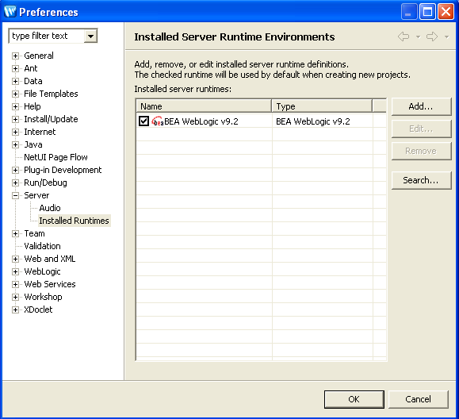
3. Una vez añadido el runtime, pulsa el botón derecho en el panel de servidores para añadir un nuevo servidor ("Botón derecho > New > Server"). Introduce el dominio "ejb" que creaste en los ejercicios anteriores ("Next > Enter Domain home (Browse...) C:\bea\user_projects\domains\ejb"). Pulsa "Finish".
Pulsa en el botón "Play" para poner en marcha el servidor. Debe quedar en estado de "Started":
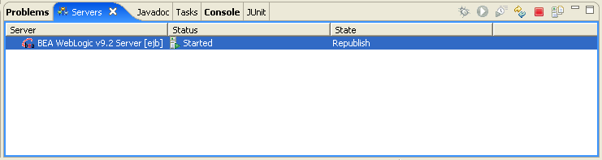
Aparecerá un terminal en el que se muestra la salida estándar del servidor de aplicaciones:
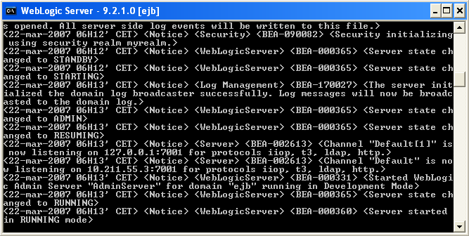
Proyecto cliente
Vamos ahora a importar el proyecto cliente de la sesión anterior (creado con Eclipse) al entorno de trabajo Workhsop.
1. Copia la carpeta ejb-cliente-saludo de la carpeta donde está el espacio de trabajo de Eclipse a la carpeta donde has creado el espacio de trabajo de Workshop.
2. Ya en Workshop, crea un nuevo proyecto java ("New > Project... > Java > Java Project"). Introduce como nombre del proyecto el mismo del proyecto que has copiado (ejb-cliente-saludo). Aparecerá un mensaje en el que el Workshop te informa de que el proyecto ya existe y que va a intentar configurar el build path. Pulsa "Finish" y cambia a la perspectiva de Java. El entorno mostrará el siguiente aspecto:
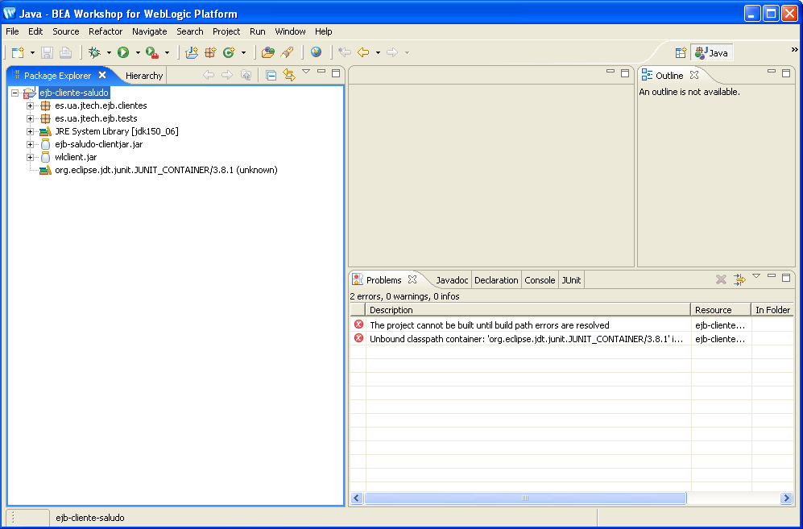
3. Aparece un error debido a que no se encuentran las librerías de JUnit. Haz que Workshop las instale automáticamente creando un nuevo test y cancelando su creación después de haber añadido la librería al build path. El aspecto del proyecto debe ser el siguiente:
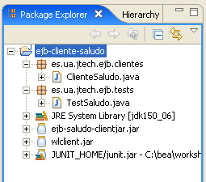
4. Prueba ahora a ejecutar el cliente y el test de JUnit. Verás que aparece un error, debido a que el enterprise bean no está desplegado en el servidor.
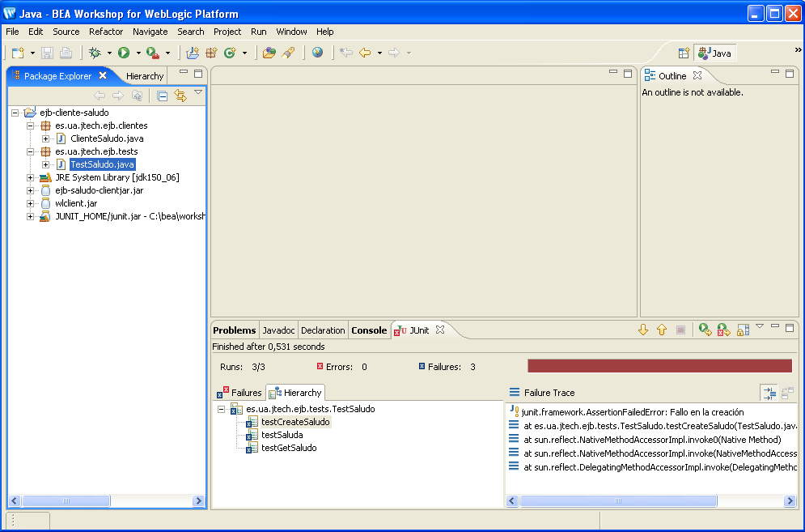
Creación del enterprise bean Saludo
Una vez instalado el servidor de aplicaciones y el proyecto cliente vamos a crear y desplegar el bean Saludo.
1. Comenzamos creando un proyecto EJB WebLogic ("Botón derecho en el panel del explorador de proyectos > New > Project... > EJB > WebLogic EJB Project"). Escribimos como nombre de proyecto ejb-saludo terminamos ("Next > Finish"). El entorno cambia a la perspectiva Workshop.
2. Creamos el paquete es.ua.jtech.ejb.beans y en él creamos un WebLogic SessionBean ("Botón derecho sobre el paquete > New > WebLogic SessionBean"). Ponemos como nombre de fichero SaludoBean:
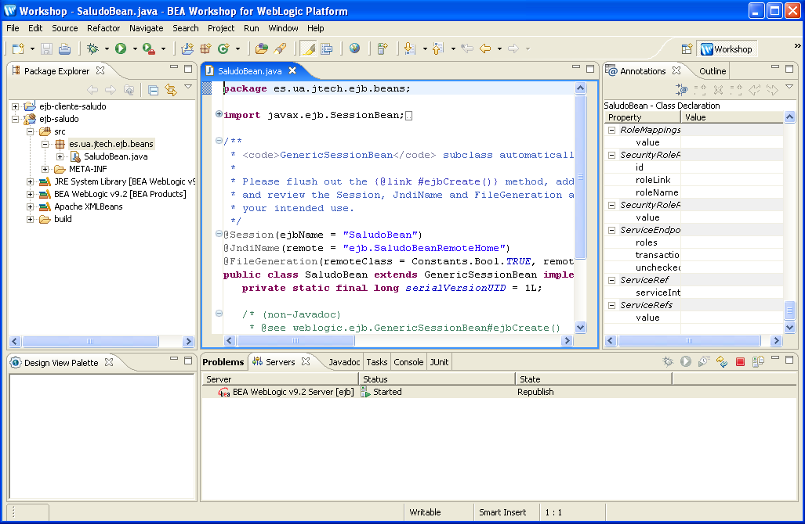
3. Vamos a escribir el código del bean de sesión. Será el mismo que tenía el fichero de implementación del proyecto Eclipse, añadiéndole algunas anotaciones. Abre el fichero SaludoBean.java del proyecto Eclipse ("File > Open File > ...") y copia la definición del array de saludos y los métodos saluda() y getSaludo(). No tienes que copiar los métodos vacíos que implementan la interfaz SessionBean porque ya están implementados en la clase GenericSessionBean extendida por la clase SaludoBean.
4. Arregla los errores del build path importando las clases necesarias (java.util.Date y java.util.ArrayList).
5. Crea la clase SaludoTO en el mismo paquete que el bean y copia su contenido del fichero del proyecto Eclipse.
6. Vamos ahora a modificar las anotaciones, para adaptarlas a los nombres que usamos en las sesiones anteriores. En primer lugar, en la clase SaludoBean, debe aparecer como nombre remoto JNDI SaludoBean:
@JndiName(remote="SaludoBean")
Después, los nombres de las interfaces remota y home debemos cambiarlos a "Saludo" y "SaludoHome":
@FileGeneration(...
remoteClassName="Saludo",
remoteHomeName="SaludoHome")
Por último, anota los métodos saluda() y getSaludo() con la anotación @RemoteMethod()
Con esto ya está definido el enterprise bean.
7. Antes de desplegar el bean, vamos a definir el nombre del fichero cliente ejbjar necesario para acceder al bean desde un cliente remoto. Pulsa "Botón derecho en ejb-saludo > Properties > WebLogic EJB"). Quita el tic "Use default" y escribe el nombre ejb-saludo-clientjar.jar.
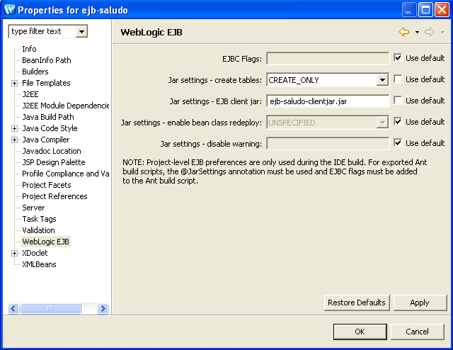
8. Vamos ya a desplegar el bean. Pulsa en el servidor BEA WebLogic con el botón derecho y escoge la opción "Add and Remove Projects...". Verás el proyecto ejb-saludo. Añádelo y finaliza el despliegue. El entorno debe quedar con el siguiente aspecto:
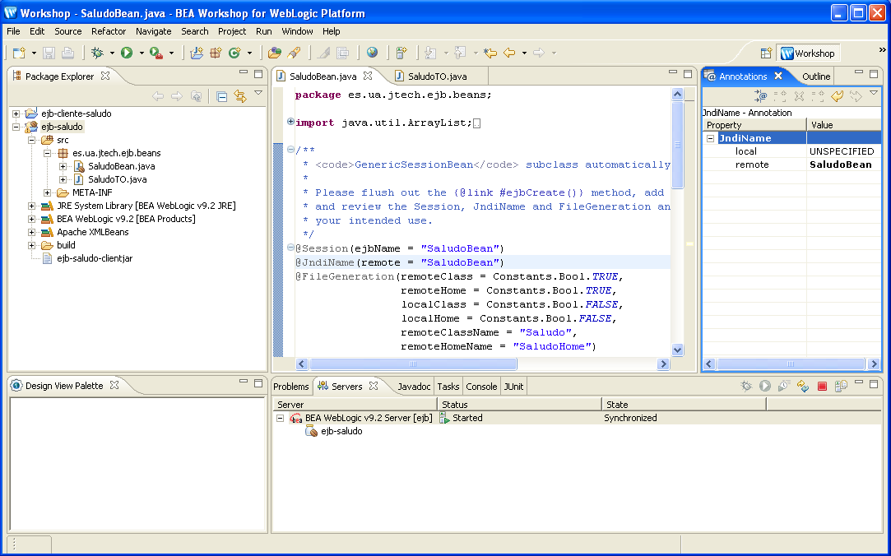
9. Abre la consola de administración y comprueba que el bean está deplegado.
Prueba de los clientes del bean
1. Actualiza la librería clientjar del bean. Para ello borra la librería ejb-saludo-clientjar.jar del proyecto cliente con la opción "Botón derecho > Build Path > Remove from Build Path". Copia el fichero ejb-saludo-clientjar.jar del proyecto EJB al proyecto cliente y añádela al build path ("Botón derecho > Build Path > Add to Build Path").
2. Limpia el proyecto cliente y prueba la aplicación cliente y los tests de JUnit.
(*) Creación de la aplicación Web
Vamos ahora a crear la aplicación web que se conecta al bean de forma local. Para ello deberemos:
- Crear el proyecto Web
- Modificar el proyecto EJB para añadir las interfaces locales al bean
Vamos a ello.
1. Crea un nuevo proyecto Web ("New > Projet... > Web > Dynamic Web Project") con el nombre de ejb-saludoWar. Pulsa "Next" y deja marcadas sólo las opciones "Dynamic Web Module" y "Java" (ver figura). Pulsa "Finish" para finalizar.
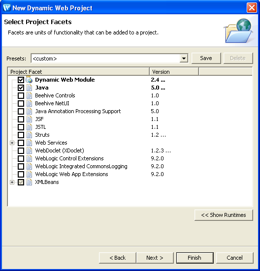
2. Crea el paquete es.ua.jtech.ejb.delegates en el que copiarás el JavaBean que accederá al EJB. Para ello crea la clase SaludoBean en el paquete y copia el contenido de la clase SaludoBean del proyecto Eclipse.
3. Arregla los errores de librerías añadiendo el proyecto EJB en el build path ("Build Path > Configure Build Path" y en la pestaña "Projects" pulsar "Add... ejb-saludo").
4. Para añadir el carácter local al EJB basta con añadir las siguientes anotaciones:
- En la definición de la clase SaludoBean, añade el nombre local JNDI y los nombres de las clases locales:
@JndiName(... local="SaludoBeanLocal") @FileGeneration(... localClass=TRUE localClassName="SaludoLocal" localHome=TRUE localHomeName="SaludoLocalHome") - En los métodos saluda() y getSaludo() añade la anotación @LocalMethod().
5. Graba el bean y verás cómo desaparecen los errores en ejb-saludoWar (no hace falta crear de nuevo el ejbjar cliente porque se va acceder al bean de forma local y los ficheros class están disponibles en el servidor).
6. Copia el fichero index.jsp del proyecto Eclipse al directorio WebContent.
(*) Creación y despliegue del EAR
Una vez creado el proyecto War vamos a guardar ambos en un proyecto EAR y a desplegarlos en el servidor de aplicaciones.
1. Creamos un proyecto EAR ("New > Project > J2EE > Enterprise Application Project") con el nombre de ejb-saludoWebEAR. Añadimos al proyecto los módulos EJB (ejb-saludo) y WAR (ejb-saludoWar):
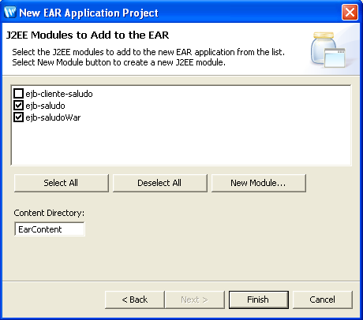
2. Elimina el módulo EJB del servidor.
3. Añade el módulo EAR ejb-saludoWebEAR al servidor.
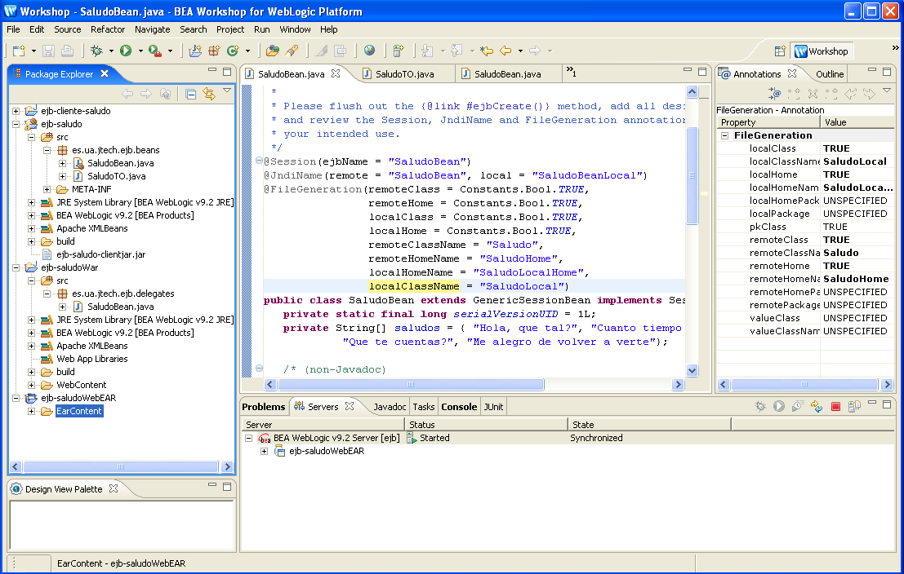
4. Comprueba que funciona la aplicación Web conectándote a la URL http://localhost:7001/ejb-saludoWar/:
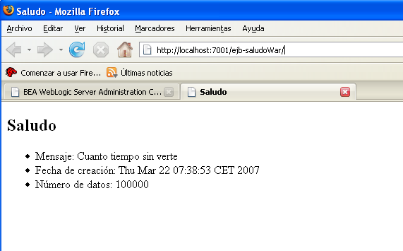
5. Por último, prueba el cliente remoto y el test JUnit para comprobar que la interfaz remota del EJB sigue funcionando.